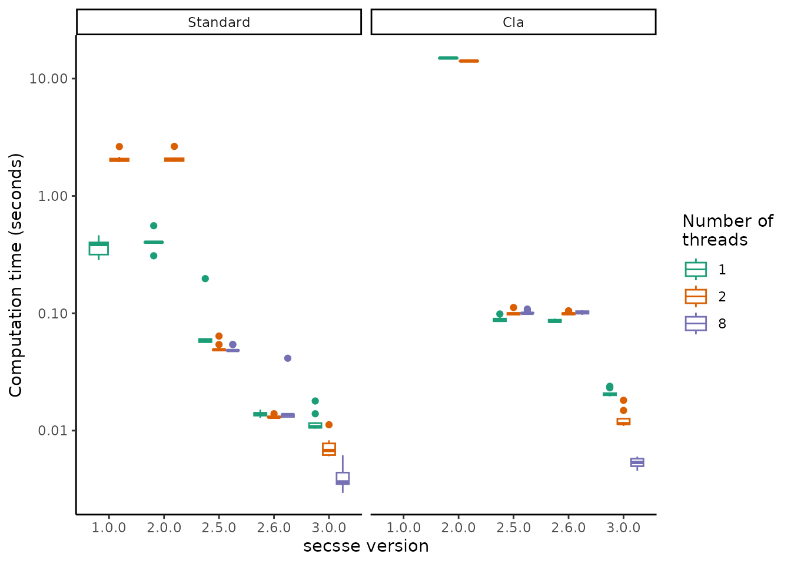

Secsse performance
Thijs Janzen
2023-07-10
Source:vignettes/secsse_performance.Rmd
secsse_performance.Rmdsecsse has gone over many versions since it’s first appearance on CRAN in 2019, with various rates of computational performance. Here, we would like to shortly go over the main versions of secsse, and compare their computational performance.
Secsse Versions
1.0.0
The first version of secsse appeared in January of 2019 on CRAN. It used the package deSolve to solve all integrations, and could switch between either using a fully R based evaluation, or use FORTRAN to speed up calculations. Furthermore, using the foreach package, within-R parallelization was implemented. However, parallelization only situationally improved computation times, and generally, computation was relatively slow.
2.0.0
Version 2.0.0 appeared in June of 2019 on CRAN and extended the package with the cla framework, e.g. including state shifts during speciation / asymmetric inheritance during speciation.
2.5.0
Version 2.5.0 appeared in 2021 on GitHub and was published in May 2023 on CRAN. Version 2.5.0 marks the first version using C++ to perform the integration, and it used tbb (from the RcppParallel package) to perform multithreading. This marks a ten fold increase in speed over previous versions.
Speed
Using a standardized computation test of calculating the likelihood of a system with two observed and two concealed traits, on a tree of ~500 tips we calculated the computation time using either the cla or the standard likelihood. Loading and reloading different versions of the same package inevitably requires restarting R in between to clear cache memory and avoid using parts of code not completely unloaded. Hence, here we do not actually perform the benchmark, but load the results directly from file:
load("timing_data.RData")
ggplot(timing_data, aes(x = version, y = time, col = as.factor(num_threads))) +
geom_boxplot() +
scale_y_log10() +
xlab("secsse version") +
ylab("Computation time (seconds)") +
labs(col = "Number of\nthreads") +
theme_classic() +
scale_color_brewer(type = "qual", palette = 2) +
facet_wrap(~type)
It is clear that we have come a long way since 2019, and that current versions of secsse are approximately a factor 100 faster. Note that for the cla likelihood, there are not timings available for version 1.0.0, because that version did not contain the cla likelihood versions yet.
Appendix
Testing code standard likelihood
run_this_code <- FALSE
if (run_this_code) {
set.seed(42)
out <- DDD::dd_sim(pars = c(0.5, 0.3, 1000), age = 30)
phy <- out$tes
cat("this tree has: ", phy$Nnode + 1, " tips\n")
traits <- sample(c(0, 1), ape::Ntip(phy), replace = TRUE)
b <- c(0.04, 0.04) # lambda
d <- rep(0.01, 2)
userTransRate <- 0.2 # transition rate among trait states
num_concealed_states <- 2
sampling_fraction <- c(1, 1)
toCheck <- secsse::id_paramPos(traits,num_concealed_states)
toCheck[[1]][] <- b
toCheck[[2]][] <- d
toCheck[[3]][,] <- userTransRate
diag(toCheck[[3]]) <- NA
root_state_weight <- "proper_weights"
use_fortran <- TRUE
methode <- "odeint::bulirsch_stoer"
cond <- "noCondit"
# the different secsse versions have similar, but not identical
# syntax (mainly, they handle multi-threading / parallelization different)
run_secsse_new <- function(nt) {
secsse::secsse_loglik(parameter = toCheck,
phy = phy,
traits = traits,
num_concealed_states = num_concealed_states,
cond = cond,
root_state_weight = root_state_weight,
sampling_fraction = sampling_fraction,
num_threads = nt,
is_complete_tree = FALSE)
}
run_secsse_old <- function(use_parallel) {
secsse::secsse_loglik(parameter = toCheck,
phy = phy,
traits = traits,
num_concealed_states =
num_concealed_states,
sampling_fraction = sampling_fraction,
run_parallel = use_parallel)
}
measure_time <- function(local_fun, num_repl, parallel) {
vv <- c()
for (r in 1:num_repl) {
t1 <- Sys.time()
local_fun(parallel)
t2 <- Sys.time()
vv[r] <- difftime(t2, t1, units = "secs")
}
return(vv)
}
if (packageVersion("secsse") < 2.5) {
t1 <- measure_time(run_secsse_old, 10, FALSE)
t2 <- measure_time(run_secsse_old, 10, TRUE)
to_add <- cbind(t1, as.character(packageVersion("secsse")), 1)
to_add2 <- cbind(t2, as.character(packageVersion("secsse")), 2)
timing_data <- rbind(timing_data, to_add, to_add2)
} else {
t1 <- measure_time(run_secsse_new, 10, 1)
t2 <- measure_time(run_secsse_new, 10, 2)
t3 <- measure_time(run_secsse_new, 10, 8)
to_add <- cbind(t1, as.character(packageVersion("secsse")), 1)
to_add2 <- cbind(t2, as.character(packageVersion("secsse")), 2)
to_add3 <- cbind(t3, as.character(packageVersion("secsse")), 8)
timing_data <- rbind(timing_data, to_add, to_add2, to_add3)
}
}Testing code Cla likelihood
run_code <- FALSE
if (run_code) {
set.seed(42)
#set.seed(51)
out <- DDD::dd_sim(pars = c(0.5 , 0.3, 1000), age = 30)
phy <- out$tes
cat("this tree has: ", phy$Nnode + 1, " tips and ", phy$Nnode, " internal nodes\n")
num_concealed_states <- 3
traits <- sample(c(0,1, 2), ape::Ntip(phy),replace = TRUE)
sampling_fraction = c(1, 1, 1)
idparlist <- cla_id_paramPos(traits, num_concealed_states)
lambda_and_modeSpe <- idparlist$lambdas
lambda_and_modeSpe[1,] <- c(0.2, 0.2, 0.2, 0.4, 0.4, 0.4, 0.01, 0.01, 0.01)
parameter <- list()
parameter[[1]] <- prepare_full_lambdas(traits, num_concealed_states,
lambda_and_modeSpe)
parameter[[2]] <- rep(0.05,9)
masterBlock <- matrix(0.07, ncol = 3, nrow = 3, byrow = TRUE)
diag(masterBlock) <- NA
parameter[[3]] <- q_doubletrans(traits, masterBlock, diff.conceal = FALSE)
run_secsse_new <- function(nt) {
secsse::cla_secsse_loglik(parameter = parameter,
phy = phy,
traits = traits,
num_concealed_states = num_concealed_states,
sampling_fraction = sampling_fraction,
is_complete_tree = FALSE,
num_threads = nt,
atol = 1e-8,
rtol = 1e-6)
}
run_secsse_old <- function(use_parallel) {
secsse::cla_secsse_loglik(parameter = parameter,
phy = phy,
traits = traits,
num_concealed_states =
num_concealed_states,
sampling_fraction = sampling_fraction,
run_parallel = use_parallel)
}
measure_time <- function(local_fun, num_repl, parallel) {
vv <- c()
for (r in 1:num_repl) {
t1 <- Sys.time()
local_fun(parallel)
t2 <- Sys.time()
vv[r] <- difftime(t2, t1, units = "secs")
}
return(vv)
}
if (packageVersion("secsse") < 2.5) {
t1 <- measure_time(run_secsse_old, 10, FALSE)
t2 <- measure_time(run_secsse_old, 10, TRUE)
to_add <- cbind(t1, as.character(packageVersion("secsse")), 1)
to_add2 <- cbind(t2, as.character(packageVersion("secsse")), 2)
timing_data <- rbind(timing_data, to_add, to_add2)
} else {
t1 <- measure_time(run_secsse_new, 10, 1)
t2 <- measure_time(run_secsse_new, 10, 2)
t3 <- measure_time(run_secsse_new, 10, 8)
to_add <- cbind(t1, as.character(packageVersion("secsse")), 1)
to_add2 <- cbind(t2, as.character(packageVersion("secsse")), 2)
to_add3 <- cbind(t3, as.character(packageVersion("secsse")), 8)
timing_data <- rbind(timing_data, to_add, to_add2, to_add3)
}
}